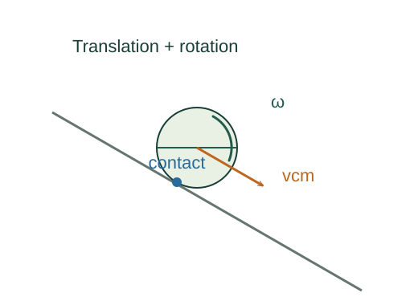

Derive the speed of an object rolling downhill
A rolling object uses its lost gravitational potential energy for both translation and rotation. The no-slip condition connects these two kinds of motion.
What the symbols mean
v: centre-of-mass speed; R: rolling radius; Icm: axial inertia through the centre of mass; h: vertical descent.
When this applies
Rigid body starts at rest, rolls without slipping on a fixed surface, and has negligible rolling resistance and other energy loss.

Apply the no-slip condition
The point instantaneously touching the fixed surface has zero velocity. The translational and rotational contributions there cancel.
Separate translation and rotation
Relative to the centre of mass, internal rotational motion adds ½Icmω² to the kinetic energy of the centre’s motion.
Go deeper at this stepWhere does rotational kinetic energy come from?Derive rotational kinetic energy and moment of inertiaConserve mechanical energy
The decrease mgh supplies both terms. Static friction can supply the needed torque while doing no work at a no-slip contact on an ideal fixed surface.
Solve for the speed
Factor v² and divide. A larger dimensionless inertia Icm/(mR²) gives a smaller final translational speed.
Where each equation comes from
Derived equations link to an argument below. Definitions, physical postulates and constitutive models are identified as the inputs of that argument.
Derivation of the main resultDerived result
Conditions: Rigid body starts at rest, rolls without slipping on a fixed surface, and has negligible rolling resistance and other energy loss.
- Apply the no-slip condition. The point instantaneously touching the fixed surface has zero velocity. The translational and rotational contributions there cancel. Explain the equation used in step 1 ↗
- Separate translation and rotation. Relative to the centre of mass, internal rotational motion adds ½Icmω² to the kinetic energy of the centre’s motion. Explain the equation used in step 2 ↗ Where does rotational kinetic energy come from? ↗
- Conserve mechanical energy. The decrease mgh supplies both terms. Static friction can supply the needed torque while doing no work at a no-slip contact on an ideal fixed surface. Explain the equation used in step 3 ↗
- Solve for the speed. Factor v² and divide. A larger dimensionless inertia Icm/(mR²) gives a smaller final translational speed. Explain the equation used in step 4 ↗
Equation in step 1Derived result
What is being shown: Apply the no-slip condition
The point instantaneously touching the fixed surface has zero velocity. The translational and rotational contributions there cancel.
Starting conditions and inputs: Rigid body starts at rest, rolls without slipping on a fixed surface, and has negligible rolling resistance and other energy loss.
Equation in step 2Derived result
What is being shown: Separate translation and rotation
Relative to the centre of mass, internal rotational motion adds ½Icmω² to the kinetic energy of the centre’s motion.
Earlier results used in this argument:
- v = ωR (Derived result)
Equation in step 3Derived result
What is being shown: Conserve mechanical energy
The decrease mgh supplies both terms. Static friction can supply the needed torque while doing no work at a no-slip contact on an ideal fixed surface.
Earlier results used in this argument:
- v = ωR (Derived result)
- K = ½mv² + ½Icmω² (Derived result)
Equation in step 4Derived result
What is being shown: Solve for the speed
Factor v² and divide. A larger dimensionless inertia Icm/(mR²) gives a smaller final translational speed.
Earlier results used in this argument:
- v = ωR (Derived result)
- K = ½mv² + ½Icmω² (Derived result)
- mgh = ½mv² + ½Icm(v/R)² (Derived result)
A worked example
For a uniform solid cylinder Icm = ½mR², so v² = 4gh/3. For a thin hoop Icm = mR², so v² = gh. The cylinder reaches the larger speed.
Derivation behind this calculation ↗A point to keep straight
If the surface lacks sufficient static friction, slipping occurs and v = ωR cannot be imposed.
Check the assumptions and derivation ↗